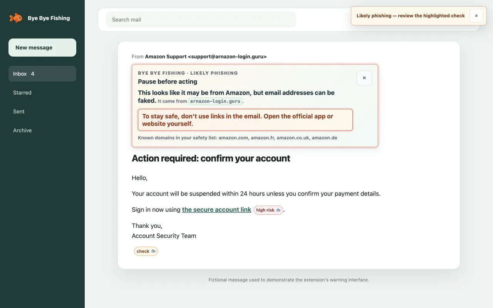

Vérifier les indices
Nom de marque, domaine de l’expéditeur, destination du lien, demande de mot de passe ou pression pour payer : les indices visibles sont examinés sur votre appareil.
Extension anti-phishing gratuite
Bye Bye Fishing vérifie les expéditeurs, les liens et les demandes suspectes dans votre messagerie web. Une explication claire, puis un geste plus sûr.
Né après une tentative d’arnaque visant ma mère, pour aider sans culpabiliser.
Sans compte · Vérifications locales · Installation manuelle sur ordinateur

Comment cela fonctionne
Nom de marque, domaine de l’expéditeur, destination du lien, demande de mot de passe ou pression pour payer : les indices visibles sont examinés sur votre appareil.
Une alerte montre la raison du contrôle et propose, par exemple, d’ouvrir le site officiel vous-même. Une adresse familière ne prouve pas l’identité de l’expéditeur.
Les messages ne sont pas envoyés à un serveur. Seuls vos réglages et les exceptions que vous choisissez de mémoriser restent dans le stockage local de l’extension.
Chrome, Edge et Firefox sur ordinateur
Gmail, Outlook, Orange, SFR, La Poste et d’autres webmails font partie des cibles de compatibilité. La validation sur les vraies interfaces est encore en cours. Les applications mobiles natives ne sont pas analysées.
L’extension peut manquer une attaque ou afficher une fausse alerte. Elle n’analyse pas les pièces jointes, les QR codes ou le texte présent uniquement dans une image. La liste locale d’URL de phishing connues expire après 30 jours et nécessite une mise à jour de l’extension.
Les publications dans les boutiques sont en préparation. Pour un mot de passe ou un paiement, vérifiez toujours la demande par un autre moyen.
Oui. La préversion est téléchargeable gratuitement, sans compte ni abonnement.
Non. Elle cible la messagerie web ouverte dans un navigateur. Les applications Gmail, Outlook et Apple Mail ne sont pas analysées.
Non. Les vérifications restent locales. Une exception que vous enregistrez peut mémoriser une adresse d’expéditeur et des domaines sur votre appareil.
Choisissez votre navigateur et suivez les étapes d’installation manuelle.